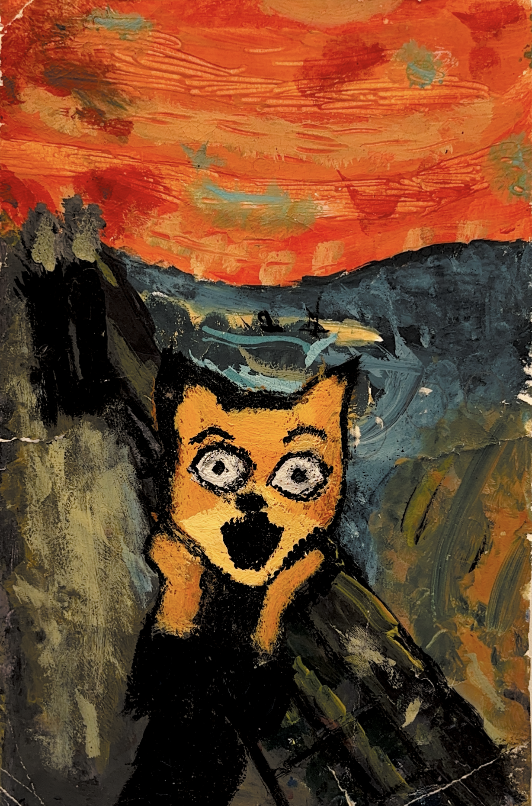

J

"Le Cri" - Edvard Munch - 1893
Le tableau représente le peintre au centre sous l'angoisse après avoir entendu un cri. Le ciel est coloré d'un mélange de rouges et oranges pour représenter le bouleversement de l'artiste en entendant l'éruption du volcan Krakatoa en Indonésie. C'est un des tableaux les plus connus de Munch qui es encore très connu de nos jours.

"Le coup de fusil"
"Le coup de fusil" est une référence au roman "Fantastique maître renard" écrit par Roald Dahl en 1970 et adapté au cinéma par Wes Anderson en 2009. Dans ce tableau : Mister fox est représenté au centre et remplace le personnage de Munch, il n'est pourtant pas effrayé à cause d'un cri, mais d'un coup de fusil. En effet, dans le roman, Mister fox tente de voler des fermiers pour pouvoir nourrir sa famille et ses voisins, pour ce faire, il va essayer toutes les techniques de ruse possibles. Le roman est progressif dans les stratégies mises en place par le renard mais aussi dans la violence avec laquelle les fermiers essaient de se débarrasser des renards.
- Dimensions : 83,52 cm*66 cm
- Année : 1893
- Lieu de conservation : "Galerie nationale d'Oslo"
- Technique : Peinture à l'huile, tempera et pastel
- Matériau : carton